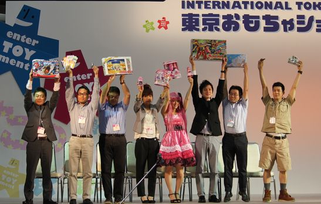

| 日本おもちゃ大賞2014 募集要項 | |
| 「日本おもちゃ大賞2014」募集（締切 2014年4月11日（金）必着） 応募の条件、申し込み方法など詳細は、下記の募集要綱をご覧ください。 |
|
| ■募集要綱はこちら（PDF） | |
| ■申込フォーマット(Excel形式) 7部門用 ヒットセールス賞用 | |
■応募資格と対象品（以下の条件をすべて満たすもの） ①応募者は、東京おもちゃショー2014出展社であること（国内・海外企業は問いません）。 ②対象品は現在市場に出ている玩具もしくは平成26年9月末日までに発売を予定している玩具で、過去に本大賞への応募を行なったことがないもの。 ③STマーク対象品にあっては、STマーク合格品であること。発売予定のものについては、STマーク取得手続を行うものであること。 ④知的財産権が第三者に属するものを使用する場合は、当該使用について適法な許諾を受けた商品であること。 |
|
| 前回（2013年）の日本おもちゃ大賞受賞商品一覧 | |
|  | |